16. Egenskaper för talföljder
I föregående kaptilet märkte vi att beorende på hur talföljden definieras beter de sig olika.
Vi talar om att talföljder är växande, avtagande eller konstanta. Talföljer behöver inte hela tiden vara endast växande, avtagande eller konstanta. De kan vara blandningar av dessa tre. Är de dock endast växande eller avtagande talar vi om att de är strägt växande eller strängt avtagande.
Konstant talföljd
En talföljd är konstant om alla element har samma värde, \(a_1 = a_2 = a_3 = a_4 \ldots\).
Växande talföljd
En talföljd är växande om följande element har samma värde eller ett större värde än föregående element, \(a_1 \leq a_2 \leq a_3 \leq a_4 \ldots\).
Strängt växande talföljd
En talföljd är strängt växande om följande element alltid är större än föregående element, \(a_1 < a_2 < a_3 < a_4 \ldots\).
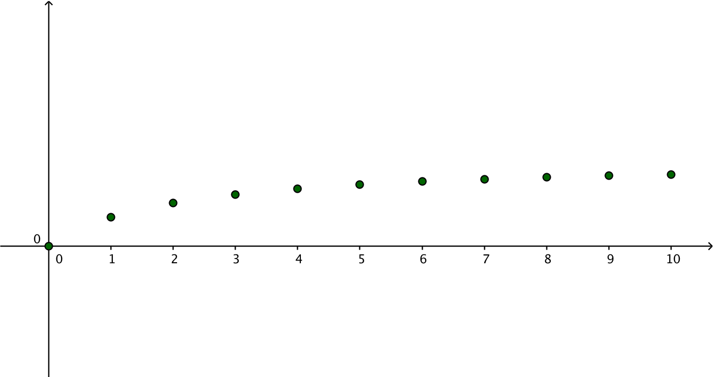
Avtagande talföljd
En talföljd är avtagande om följande element är samma värde eller ett mindre värde än föregående element, \(a_1 \geq a_2, \geq a_3 \geq a_4 \ldots\).
Strängt avtagande talföljd
En talföljd är strängt avtagande om följande element alltid är mindre än föregående element, \(a_1 > a_2 > a_3 > a_4 \ldots\).
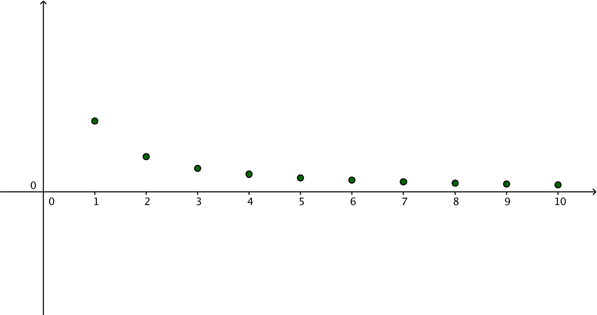
Om en talföljd är strängt växande eller strängt avtagande talar vi om att den är strängt monotom.
Talföljder på GeoGebra
Kommandot Talföljd[(i,i^2), i , 0, 6]
Talfäljder på LibreOfficeCalc
Video där vi söker efter S.V. och M.V.?
Uppgifter
- Vad gör en talföljd till
- växande?
En talföljd är växande om följande element har samma värde eller ett större värde än föregående element.
- avtagande?
En talföljd är avtagande om följande element är samma värde eller ett mindre värde än föregående element.
- konstant?
En talföljd är konstant om alla element har samma värde.
- strängt växande?
En talföljd är strängt växande om följande element alltid är större än föregående element.
- strängt avtagande?
En talföljd är strängt avtagande om följande element alltid är mindre än föregående element.
- växande?
Välj rätt egenskap för talföljderna.
Påstående Växande Avtagande Konstant Strängt växande Strängt avtagande Ingendera 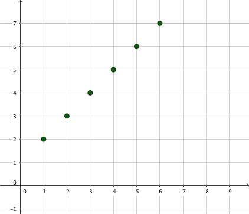 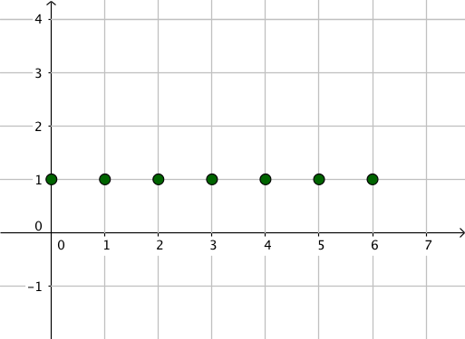 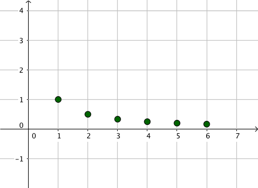 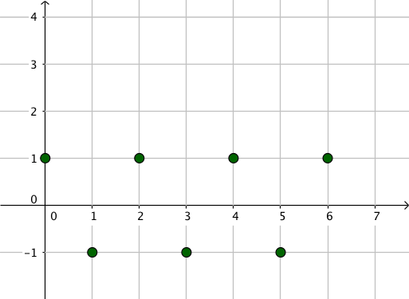 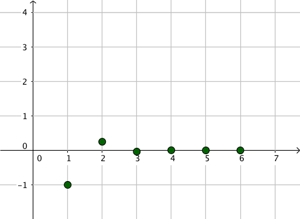 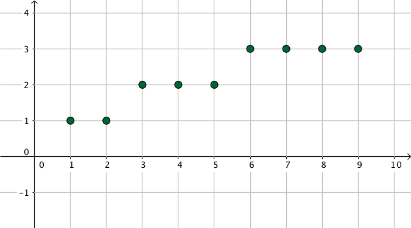 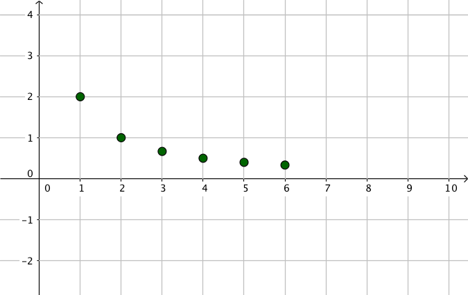 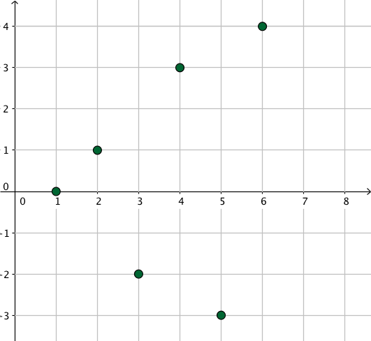 Påstående Växande Avtagande Konstant Strängt växande Strängt avtagande Ingendera Konstruera på GeoGebra en talföljd som har följnade egenskap.
Försök att arbeta med kommandot Talföljd[] på GeoGebra. Ibland är det lättare att bara pricka in punkter med Punkt verktyget.
- växande
Något i stil med
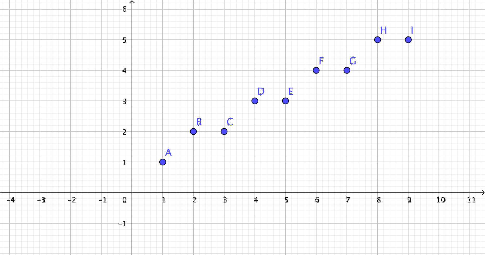
Här är det inritat punkter med Punkt vertyget.
- avtagande
Något i stil med

Här är det inritat punkter med Punkt vertyget.
- konstant
Något i stil med
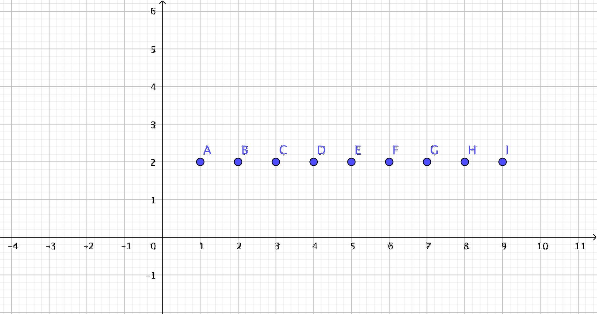
Här är det inritat punkter med Punkt vertyget.
- strängt växande
Något i stil med
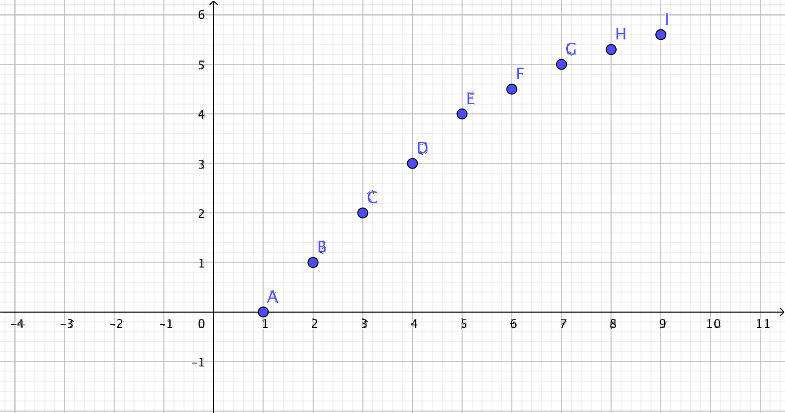
Här är det inritat punkter med Punkt vertyget.
- strängt avtagande.
Något i stil med
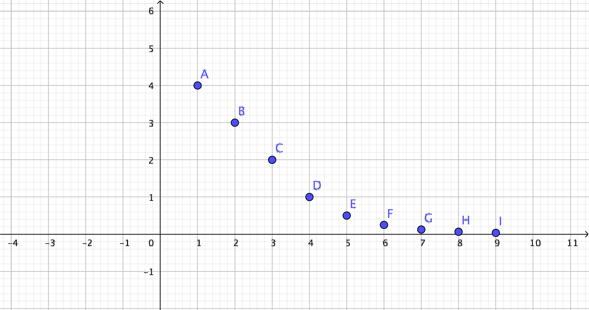
Här är det inritat punkter med Punkt vertyget.
- växande
Använd dig av LibreOffice för att bestäm största eller minsta värde för taljöljden som definieras av \(a_n=\dfrac{n-1}{n^2}\) då \(n \in \mathbf{N}\).
Kom också ihåg att ange de element som ger största eller minsta värde.
På LibreOffice får vi följande tabell
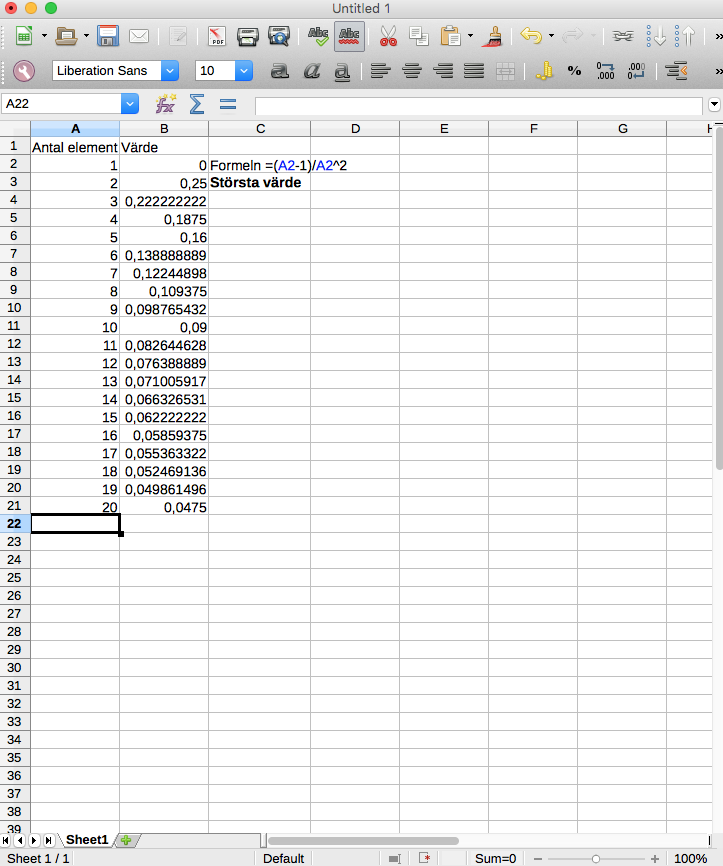
Talföljdens strösta värde är 0,25 i andra elementet. Efter det avtar den och närmar sig värdet 0 då vi sätter in större och större värden på indexet. Vi talar om att talföljden närmar sig talet noll då \(n\) går mot oändligheten.
Använd dig av LibreOffice för att bestäm största eller minsta värde för taljöljden som definieras av \(a_n=\dfrac{10n-1}{(n+1)^2}\) då \(n \in \mathbf{N}\).
Kom också ihåg att ange de element som ger största eller minsta värde.
På LibreOffice får vi något i stil med
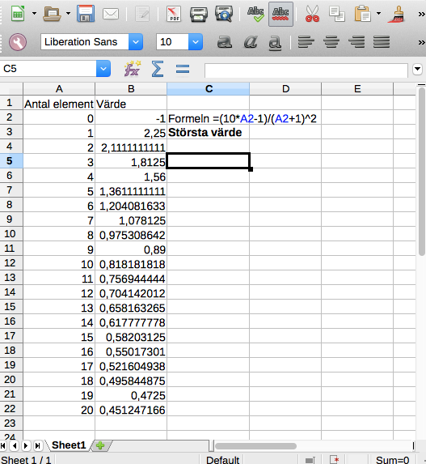
Det största värdet vi får är 2,25 i element nummer 1. Funktionen avtar efter det och kommer att närma sig talet 0.
Använd dig av LibreOffice för att bestäm största eller minsta värde för taljöljden som definieras av \(a_n=\dfrac{n+\frac{2}{n}}{2}\) då \(n \in \mathbf{N}\).
Kom också ihåg att ange de element som ger största eller minsta värde.
På LibreOffice får vi något i stil med

Denna talföljd har två element som ger samma minsta värden, 1,5, index 1 och 2. Annars är taljöljden strängt växande.